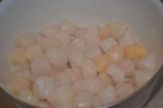
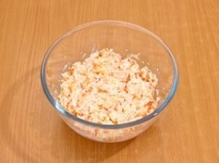

Шаг 1: размораживаем и отвариваем морские гребешки.

Существует два самых популярных способа разморозки морепродуктов. Первый – естественная разморозка при комнатной температуре. Второй – пакет с замороженными гребешками помещают в холодную воду на 3/4 часа. Особо искушенные кулинары иногда разбавляют воду молоком и размораживают мясо моллюсков без упаковки. Тут главное не пропустить момент, когда до полной разморозки останется «совсем чуть-чуть», иначе гребешки напитаются молоком и потеряют свои вкусовые качества. Какой из способов предпочесть зависит от имеющегося времени и опыта.
Итак, размороженные морские гребешки кладем в кастрюлю, заливаем холодной водой, добавляем около чайной ложки соли, пару штук черного перца горошком и коренья петрушки. Доводим до кипения и варим на среднем огне до готовности (около 5-ти минут). Готовые морские гребешки откидываем на дуршлаг и даем остыть.
Шаг 2: отвариваем овощи и яйца.
Картофель и морковь моем, но не чистим. Варим до готовности в слегка подсоленной воде. Готовность овощей можно проверить, проткнув корнеплод деревянной шпажкой или зубочисткой – если она легко доходит до середины, значит овощи готовы. Для того, чтобы овощи легко чистились и при нарезке не слипались, сразу после окончания варки сливаем воду, а сами овощи помещаем на 10-15 минут в холодную воду. Если есть время, после этого их можно еще дополнительно охладить в холодильнике часа 2-3. Отдельно варим яйца. Чтобы в процессе варки скорлупа не треснула и яйца не вытекли, их нужно для варки залить холодной водой и добавить около столовой ложки соли. Варим яйца после закипания 10-12 минут. Затем сразу помещаем в холодную воду на 5-10 минут.
Шаг 3: нарезаем ингредиенты и смешиваем салат.

Остывшее вареное мясо гребешков и соленые огурцы нарезаем соломкой. Картофель, морковь и 1 яйцо чистим и нарезаем некрупными кубиками. В большой глубокой миске смешиваем нарезанное мясо, овощи, добавляем консервированный горошек без жидкости, солим и перчим по вкусу, заправляем майонезом.